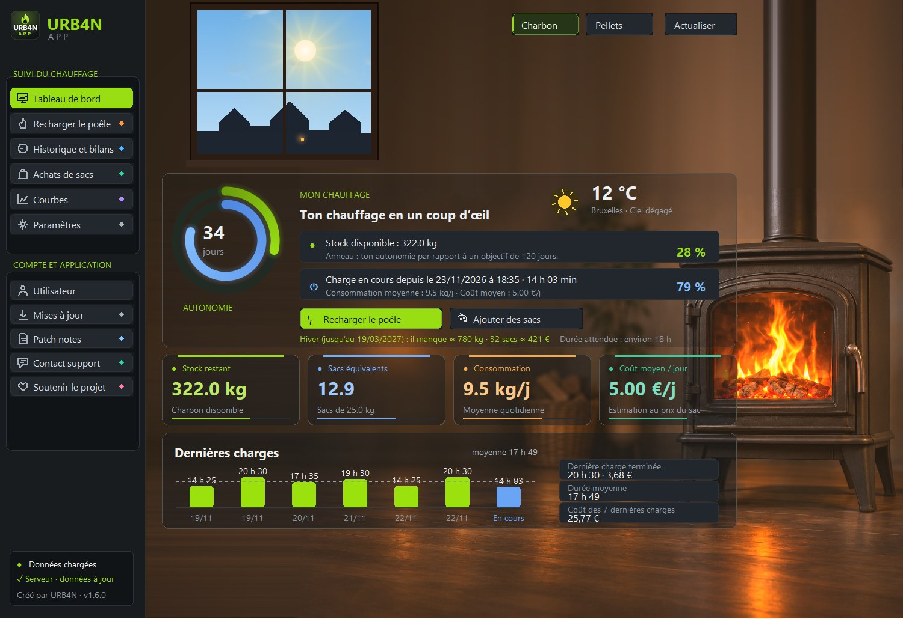
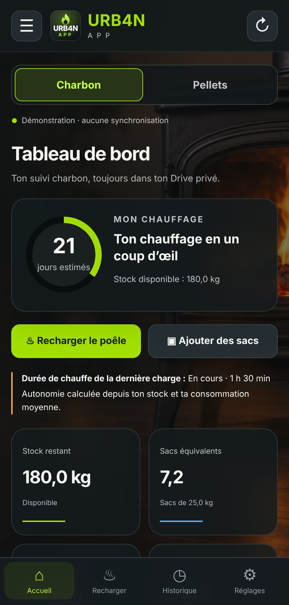
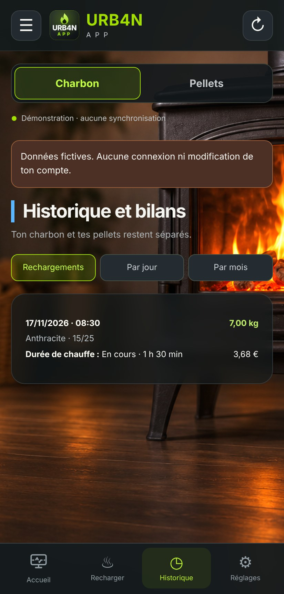

Windows, Android et iPhone · Suivi personnel
Ton poêle.
Sous contrôle.
Note tes rechargements de charbon ou de pellets et tes achats de sacs. URB4N APP calcule ton stock, ton autonomie et ton coût par jour. Tes données sont enregistrées sur ton compte URB4N, retrouvables sur tous tes appareils, et l’application garde ta saisie hors ligne.
Application sans pub · Voir la vidéo · Essayer le calculateur · Voir les captures
Note: the app itself is currently available in French only. · De app zelf is momenteel enkel in het Frans beschikbaar.

Ton stock
toujours à jour
Ton autonomie
en jours, avant de racheter
Ton coût par jour
et ton prix moyen du sac
En 20 secondes
Découvre l’application en vidéo.
Essaie tout de suite
Combien de jours te reste-t-il ?
Choisis ton combustible et réponds à quatre questions : tu vois ton autonomie, ta date de panne sèche et ton coût par jour. L’application fait ce calcul toute seule, à partir de tes vrais rechargements.
- Panne sèche vers le—
- Coût moyen—
- Stock—
Dans l’application : les charbons courants (anthracite IBB, Super Eco-Flam, Eurocalor, Topflam, Futurex, boulets défumés, lignite…) avec leurs calibres du 5/10 au 40/60, et les principales marques de pellets (Arden, Badger, Cleanfire, Comfo, Granulita, Pauls, Plospan, TotalEnergies, Woodies…) en 6 mm ou 8 mm. Ta marque n’y est pas ? Choisis « Autre ». Chaque combustible est suivi et calculé séparément.
Voir ça avec mes vrais chiffresGratuit · Windows et AndroidSur ton PC et ton téléphone
Le même suivi, partout.
Reconnecte ton compte Google sur un autre appareil et retrouve tes achats, tes rechargements et tes réglages.

Tout ce qu’il faut, rien de plus.
Chaque rechargement noté
Enregistre dates, combustibles, calibres et quantités. Consulte l’historique et les bilans par jour ou par mois.
Charbon ou pellets
Renseigne les poids vide et plein de ta charbonnière : l’application déduit le récipient et calcule les fractions versées. Pour les pellets, choisis tes sacs du ¼ de sac à 4 sacs.
Sur tous tes appareils
Reconnecte ton compte Google sur un autre appareil et retrouve ton suivi.
Comment ça marche
Installe
Télécharge l’application Windows ou Android et ouvre-la.
Connecte Google
Une inscription avec ton compte Google est requise pour accéder au suivi.
Note tes rechargements
Stock, autonomie et coût se mettent à jour tout seuls.
À l’intérieur de l’application
Un aperçu avant de te lancer.
Une interface sombre et tes outils de suivi à portée de main. Clique sur une capture pour l’agrandir.
Sur Windows

Ton chauffage en un coup d’œil
Stock, autonomie et consommation sur un seul écran.

Des achats faciles à suivre
Prix du sac ou total payé : l’autre montant est calculé.

Charbon et pellets, chacun son suivi
Combustible, calibre et quantité réellement versée.
Sur Android

Le tableau de bord, dans ta poche
Autonomie, stock et boutons rapides.

Un rechargement en quelques touches
Combustible, calibre et quantité.


Historique et durée de chauffe
Chaque rechargement, sa durée et son coût.
Captures avec des données fictives, réalisées avec les versions Windows 1.6.0 et Android 2.4.0.
Nouveautés
Fond vivant : l’accueil affiche la photo de ton poêle avec le feu animé, et une fenêtre météo animée suit le temps réel de ta ville (soleil, lune, nuages, pluie, neige, orage, brouillard, jour et nuit). Contact support refait avec la liste « Mes tickets », un bouton « Nouveau ticket » et la conversation. L’application s’ouvre en plein écran.
Questions fréquentes
L’application Android est-elle prête ?
Oui, c’est la version 2.4.0.10, installée par fichier APK hors Google Play (Android 8 ou plus récent, appareil 64 bits avec services Google Play). Les mises à jour se font depuis la page « Mises à jour » de l’application.
Pourquoi Google affiche-t-il un avertissement ?
Le projet Google est en Production, mais la validation Google est encore en préparation : un avertissement et un plafond de connexions peuvent s’appliquer. Aucun compte Google n’est fourni avec l’application, et une installation vierge nécessite encore une configuration de connexion fournie par l’éditeur.
Pourquoi connecter Google ?
Google sert uniquement à prouver qui tu es (adresse e-mail et identifiant). Ton compte URB4N est créé à la première connexion et tes données sont enregistrées sur le serveur de l’éditeur, sans accès à ton Drive.
Comment contacter le support ?
Dans l’application, le menu « Contact support » (bouton « Nouveau ticket ») envoie volontairement un titre, une description et, si tu le souhaites, une capture. Ces rapports sont conservés sur le serveur de l’éditeur. Tu retrouves ensuite la conversation dans la même page.
Comment mettre à jour l’application ?
Les mises à jour se font directement depuis l’application. Elle te propose la nouvelle version au démarrage.
Tes données restent à toi.
Google sert uniquement à t’identifier. Chaque utilisateur a son propre espace privé. Lire la confidentialité